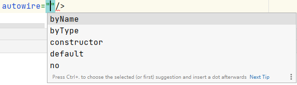
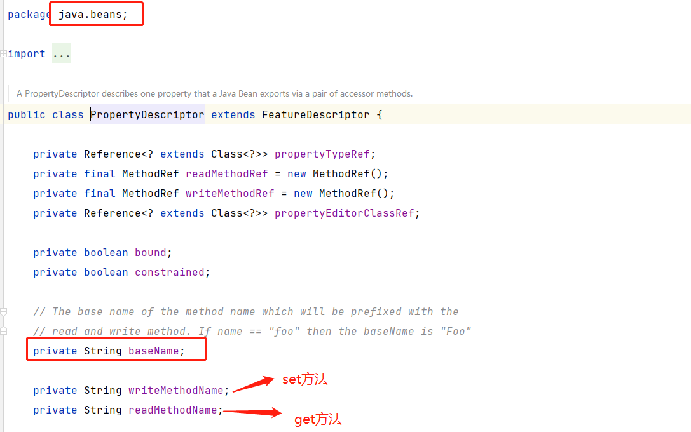
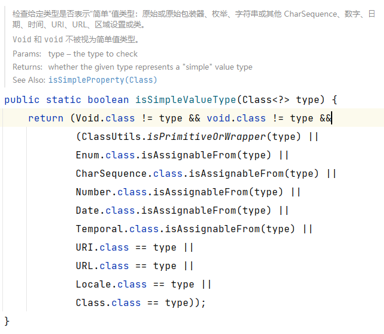
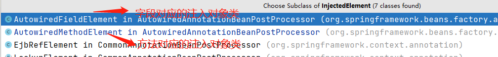

Spring中Bean的依赖注入
依赖注入的方式
手动注入
这种方式主要通过xml配置文件进行扫描。配置信息如下
从源码角度来说，手动注入又分为set方法注入和构造方法注入。
set方法注入
1 | <bean name="orderService" class="top.sunfy.service.OrderService"/> |
1 | public class UserService { |
说明，使用set方法注入时，在代码中必须添加相应的set方法，依赖注入时会根据set后面的名称去ioc容器中查找相应的方法，找到后进行赋值。
构造方法注入
1 | <bean name="orderService" class="top.sunfy.service.OrderService"/> |
1 | public class UserService { |
说明，使用构造方法注入时，在代码中必须重写构造方法，并根据注入配置重写相对应的构造方法，依赖注入时会根据参数名称去IOC容器中查找相应的方法，找到后进行赋值。
自动注入
XML的autowire自动注入

XML中，在定义一个bean时，我们可以通过autowire设置自动注入模式：
- byName
- byType
- constructor
- default
- no
XML配置如下
1 | <bean id="userService" class="top.sunfy.service.UserService" autowire="byName"/> |
如上配置，spring会自动给UserService类中所有的属性自动赋值，不需要在属性上配置@Autowired注解，但是必须有set方法。
ByName自动填充属性时流程：
- 找到所有set方法所对应的属性名称部分的名字。
- 根据属性名称的名字去获取bean。
ByType自动填充属性时流程：
- 获取set方法中的唯一参数的参数类型，并且根据类型去IOC容器中获取Bean。
- 如果找到多个，会报错。
Constructor自动填充属性:
- 使用这种方式时，就不需要写属性的set方法了，这个就是使用构造方法的方式进行注入，spring会利用构造方法中的参数信息去Spring容器中找bean，找到bean之后作为参数传给构造方法，从而实例化得到一个bean对象，并完成属性赋值，此时属性赋值需要我们在构造方法中自行编写。
- 这块目前只考虑只有一个构造方法的情况，如果多个构造方法时，会涉及推断构造方法，这个具体后续有单独说明。
- 这种方式中，就相当于ByType和ByName两种方式，和普通的ByType不同，如果采用Constructor进行自动填充，会通过ByType先在容器中查找，如果找到多个，会再根据名称去进行比对，最终确定唯一的内容，进行填充。通过一个示例说明：
spring.xml配置如下
1 | <bean name="orderService" class="top.sunfy.service.OrderService"/> |
UserService.java
1 | public class UserService { |
测试类
1 | public class Main { |
测试结果
1 | 构造方法一： |
结果分析，我们可以看出，通过上面的测试，我们证明了，在使用XML中使用Constructor自动属性填充时，会先根据Type进行查找，如果找到多个，会再根据名称进行找到。
no：表示关闭了autowire
default：这个表示默认值，我们刚才的使用过程中都是在<bean>标签中使用的，autowrite也可以使用在<beans>标签上，这样的设置表示，如果beans中设置了，那么bean中设置为default会模式使用beans中设置的。
通过上述的说明，可以看出XML中的Autowrite功能还是很强大，但是我们在平时中更多的使用的还是@Autowrite注解的方式，那这又是为什么呢？二者之间的区别是什么呢？
要回答这个问题，我们首先来了解一下@Autowired注解的使用和特点
@Autowired注解自动注入
@Autowired注解可以写在：
- 属性上：先根据属性类型去找bean，如果找到多个再根据属性名确定。
- 构造方法上：先根据方法参数类型去找bean，如果找到多个再根据属性名确定。
- set方法上：先根据方法参数类型去找bean，如果找到多个再根据参数名确定。
从底层来看，到了
- 属性注入
- set方法注入
- 构造方法注入
XML中的Autowrite和@Autowrite注解的区别？
- @Autowirte相当于XML中的autowrite属性的注解方式的替代。看一个官网中的说明
Essentially, the @Autowired annotation provides the same capabilities as described in Autowiring Collaborators but with more fine-grained control and wider applicability（本质上，@Autowired注释提供了与Autowiring collaborator中描述的相同的功能，但具有更细粒度的控制和更广泛的适用性） - 看官网描述中提到的更细粒度的控制
- XML中的autowirte控制的是整个bean的所有属性，而@Autowirte注解可以写在某个属性上，某个set方法上，某个构造方法上。假如一个bean有多个构造方法，那XML配置中使用构造方法注入时则无法控制到底使用哪个构造方法，而@Autowrite可以直接指定想用哪个构造方法。
- @Autowrite可以控制哪些属性想被自动注入，哪些属性不想，这也体现了@Autowrite的细粒度控制。
- @Autowrite无法区分ByType和ByName，会先ByType，如果找到多个再通过ByName。源码中的具体实现不同
- XML的自动注入底层其实也就是set方法注入和构造方法注入。
源码分析
什么是属性描述器 PropertyDescriptor

什么样的属性能进行自动注入？

简单值检查方法：

为什么使用@Autowrite注解的属性是static时，不会进行赋值呢。
@Autowrite注解的required属性的使用说明
@Autowrite注解注入时获取的是，参数的类型和名称，和方法名称并没有关系，都可以注入
构建自动装配元数据时，桥接方法的作用？

同时使用@Autowrite注解和BeanDefinition给某个对象赋值，最终会是什么样的结果呢？

...
...
Copyright 2021 sunfy.top ALL Rights Reserved